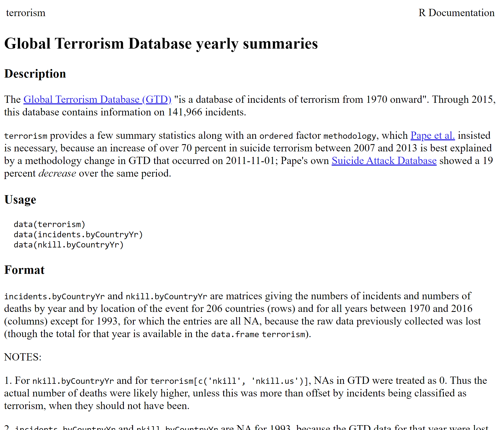
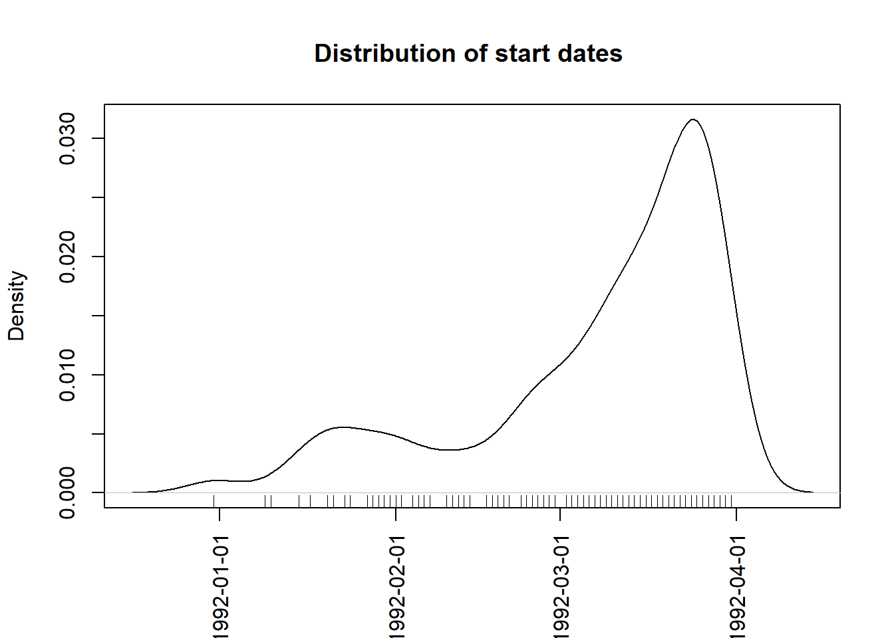

Hoofdstuk 4 Data exploratie
4.1 Principes van data exploratie
Exploratieve Data Analyse (eng: Exploratory Data Analysis; EDA) zal de datawetenschapper helpen om twee hoofddoelen te bereiken
Stelling 4.1 De twee hoofddoelen die de datawetenschapper voor ogen heeft tijden het exploreren van data zijn
- Begrijpen van de data én van processen die tot de data geleid hebben
- Controleren dat de dataset in zijn geheel maar ook elke variabele afzonderlijk aan een aantal eisen voldoet
De datawetenschapper wil tijdens het controleren van een variabele de volgende eigenschappen onderzoeken:
D uidelijkheid
Kan de betekenis van de variabele achterhaald worden? Zo niet, dan is het vaak veiliger de variabele niet te gebruiken.I nformatief
Is de informatie inhoud voldoende groot. Bijvoorbeeld, is het erg repetitieve data, dan is het misschien niet erg bruikbaar. Wordt mede bepaald door voorradigheid (zie hieronder).P rivacy
Loop je met de betrokken variabele het risico om de privacy van de eindgebruiker te schenden volgens de opgestelde Privacy Impact Assessment (PIA) of volgens de Vlaamse of Federale wetgeving, dan mag je deze variabele simpelweg niet ontsluiten.K waliteit
Zijn er technische redenen om de data niet te kunnen gebruiken? Zijn de data moeilijk om te onttrekken (bij bijv. vrije tekst), is er onvoldoende resolutie (bij metingen of afbeeldingen), gaat het om een té complex data type (bijv. circulaire), …E thiek
Het trainen met tendentieuze data leidt tot een tendentieus algoritme. Om dit te voorkomen, laat je best variabelen weg die mogelijk wel een zeker voorspellend vermogen hebben en privacy-gewijs perfect toelaatbaar zijn, maar die de vooringenomenheid uit het verleden zou bevestigen.V oorradig
Ontbreekt er méér dan ±30% van de waarden voor een bepaalde variabele (NULL, NA, "", -1, …), dan kunnen vele leeralgortimen de data niet gebruiken.E chtheid
Het kan voorkomen dat de data weinig betrouwbaar lijken in de zin dat ze vermoedelijk geen goede weerspiegeling zijn van de realiteit, i.e. ofwel vermoedelijk inaccurate data of niet representatief (bijv. slechts geldig voor beperkte subset).R elevantie
Gegeven de doelstelling van het onderzoek is het goed om je af te vragen of er wel een goede verantwoording (technisch noch functioneel) gevonden kan worden waarom deze variabele zou worden opgenomen. Hou hier best rekeneing met alle belanghebben zoals opdrachtgevers en eindgebruikers.
4.2 Stappen in data exploratie
Elke exploratie is anders en iedereen heeft zo zijn eigen methode, maar als leidraad kan je deze stappen volgen:
- Zorg eerst dat je zo veel mogelijk begrijpt van de data nog vóór je in detail in de variabelen begint te duiken. Lees het codeboek of andere omschrijvingen. Vraag indien mogelijk hulp van iemand die al wel op de hoogte is
- Controleer of er tabellen, rijen of kolommen zijn die je niet nodig hebt voor jouw analyse en filter de overbodige data desgevallend weg zodat je hier ook geen tijd mee hoeft in te steken
- Begrijp wat één instantie (rij) hier precies voor staat en controleer of het aantal rijen dan ook logisch is
- Controleer nu pas de overblijvende data variabele-per-variabele
- Lees de omschrijving van de variabele en kijk naar een samenvatting of een willekeurige steekproef van de variabele
- Loop de DIPKEVER criteria één voor één af
- Beslis op basis hiervan of je de variabele wenst te houden (eng: keep) of te verwerpen (eng: drop)
- Maak korte notities
- Kijk naar de paarsgewijze correlaties (eng: pair-wise correlations) onder de variabelen
4.3 Voorbeeld data exploratie
We gaan dit doen aan de hand van een voorbeeld. Hoewel dit voorbeeld in R wordt gepresenteerd, is een implementatie in Python zonder moeite mogelijk.
Antwoord: Via deze link naar de standaard datasets vinden we twee datasets met het woordje “terrorism” in de titel. Ééntje heeft 206 rijen (nkill.byCountryYr), laten we die eens van naderbij bekijken. Zorg ervoor dat je de dataset (CSV) hebt gedownload, die zal je straks nodig hebben om in je Python code te importeren:
import pandas as pd
import matplotlib.pyplot as plt
# CSV-bestand inlezen
df = pd.read_csv("nkill_byCountryYr.csv")
# Eerste rijen bekijken
print(df.head())
# Informatie over de kolommen
print(df.info())
Zorg er eerst voor dat je deze bibliotheken (libraries) installeert (eenmalig) via in de terminal van je VS Code. Als alles goed verlopen is, krijg je de eerste rijen van de dataset te zien. Je hebt bovendien gemerkt dat er 'DOC' staat naast 'CSV' op de website waar je de dataset hebt gedownload. Als je op 'DOC' klikt, krijg je de documentatie te zien zoals hieronder:

We onderzoeken nu de documentatie en vinden dat de databank wel erg relevant en professioneel lijkt, maar niet zo up-to-date (1970 - 2015). Toch beslissen we om door te gaan met deze dataset. We lezen dat er eigenlijk drie datasets zijn, telkens met hun eigen structuur:
terrorism: Jaartal × {verscheidene aantallen per type aanslag, locatie (wereld versus VS) en type slachtoffers}
incidents.byCountryYr: Aantal aanslagen per {Land × Jaartal}
nkill.byCountryYr: Aantal slachtoffers per {Land × Jaartal}
Hierop lanceren we de vraag:
Vraag terug: met ‘méér terrorisme,’ bedoel je méér aanslagen of méér slachtoffers
Stel dat de opdrachtgever het volgende antwoord geeft:
Antwoord terug: méér aanslagen
We kunnen nu zowel de eerste als de tweede gebruiken. We kiezen de eerste omdat daarin meer informatie vervat zit. We hebben die extra informatie nu niet nodig, maar misschien later wel. Één instantie (een rij) komt overeen met een jaartal. We zien onmiddellijk dat we de volgende variabelen nodig hebben uit de terrorism dataset:
year: het jaar waarin de aanslag werd gepleegd, als natuurlijk getal, uniek voor elke rijincidents: het aantal aanslagen voor dat jaar wereldwijd
import pandas as pd
# Laad de volledige dataset
df = pd.read_csv("nkill_byCountryYr.csv")
# Selecteer enkel de kolommen 'year' en 'incidents'
dat = df[["year", "incidents"]]
# Toon de eerste rijen van de subset
print(dat.head())
We overlopen de DIPKEVER criteria. De data zijn duidelijk en informatief. Ze lijken de privacy van niemand te schenden omdat het om geaggregeerde gegevens gaat, wereldwijd en telkens samengevat voor een heel kalenderjaar.
Kwaliteit. We beginnen met de controle dat het jaartal en de incidenten als natuurlijke getallen worden behandeld.
# Toon het datatype van elke kolom
print(dat.dtypes)
year float64
incidents float64
dtype: object
Het float64 datatype in Python stellen de reële getallen voor, niet de natuurlijke getallen. Dat is op zich geen probleem, tenslotte geldt \(\mathbb{N}\subset\mathbb{R}\) maar dit kan soms problemen geven, bijvoorbeeld bij het vergelijken of indexeren van waarden. Laten we dit rechtzetten:
# Zet 'year' en 'incidents' om naar integers
dat["year"] = dat["year"].astype(int)
dat["incidents"] = dat["incidents"].astype(int)
# Controleer het datatype van elke kolom
print(dat.dtypes.apply(lambda dt: "integer" if "int" in str(dt) else str(dt)))
year integer
incidents integer
dtype: object
Nu controleren we of het jaartal inderdaad loopt van 1970 tot en met 2015:
# Toon beschrijvende statistieken van 'year', afgerond naar int
year_summary = dat["year"].describe().astype(int)
print(year_summary)
count 46
mean 1992
std 13
min 1970
25% 1981
50% 1992
75% 2003
max 2015
Name: year, dtype: int64
en we kunnen ook nakijken of het jaartal uniek is:
# Controleer of er dubbele jaartallen zijn
print(dat["year"].duplicated().any())
FalseDe incidenten zijn ook natuurlijke getallen, maar van een andere soort dan het jaartal. De incidenten zijn namelijk ook aantallen en dit heeft heel wat statistische consequenties. Het betekent onder meer dat we voor deze variabele een histogram kunnen genereren:
import matplotlib.pyplot as plt
# Histogram van het aantal incidenten per jaar
plt.hist(dat["incidents"], bins=10, color="lightgrey", edgecolor="black")
plt.title("Verdeling aantal aanslagen")
plt.xlabel("# aanslagen per jaar")
plt.ylabel("Frequentie")
plt.show()
Hierin zien we dat er in het totaal meer dan 30 jaren zijn met minder dan 5000 aanslagen per jaar wereldwijd en dat er 3 jaren zijn met meer dan 10 000 aanslagen.
Dit was de K van DIPKEVER, we zetten onze tocht voort. Over ethiek: voor velen is dit natuurlijk een gevoelig onderwerp maar het weergeven van de aantallen aanslagen kan moeilijk als aanstootgevend worden gezien. Bovendien worden hier nog geen voorspellingen gemaakt, dus dat lijkt in orde. Er ontbreken geen data (dus voorradig). Het consortium rond de Studie van Terrorisme en Responsen op Terrorisme (START) is verantwoordelijk voor de data en gezien hun staat van dienst en academische publicaties waaronder sommige in gerenommeerde tijdschriften, lijken ze op het eerste gezicht betrouwbaar (cfr. Echtheid). Tenslotte zijn de data ongetwijfeld relevant en daarmee slagen ze voor de volledige DIPKEVER test. Het onderlinge correleren van beide variabelen biedt hier geen meerwaarde.
De exploratiefase is voorbij. Het volstaat ons nu om een grafiek op stellen waarbij het aantal aanslagen in de tijd wordt gevolgd:
dat = dat.sort_values("year")
plt.plot(dat["year"], dat["incidents"], linestyle="--", color="black")
plt.title("Verloop aantal aanslagen wereldwijd")
plt.xlabel("Kalenderjaar")
plt.ylabel("Aantal aanslagen per jaar")
plt.show()
Conclusie: Ja, het aantal gerapporteerde terroristische aanslagen lijkt volgens de START (Pape et al. 2014) toegenomen te zijn in de periode 2010 - 2015 ten opzichte van de periode 1970 - 2010.
4.4 Univariate verdelingen
We zagen net hoe je met een eenvoudige opdracht een histogram kunt opstellen voor een variabele. Het histogram, geïntroduceerd in de paragraaf rond Soorten variabelen, geeft de verdeling weer van de waarden van één variabele (univariaat, eng: univariate) langsheen de meetschaal van de variabele. Dat is cruciale informatie. Één blik op de verdeling geeft antwoord op de volgende vragen:
- Wat is het datatype?
- Lijkt het een gekende theoretische verdeling te volgen?
- Heeft een duidelijke modus, meerdere modi?
- Lijkt het erop dat de data een natuurlijke oorsprong kennen of is de data mogelijk gemanipuleerd?
- Wat is de resolutie van de meting?
- Lijken er limieten te zijn waartussen de waarden zich bevinden
We beginnen met het laden van de dataset en het tonen van de interne structuur (str) van het object dat de data bevat
import pandas as pd
# Lees de dataset in en converteer de kolommen 'entry.dt' en 'end.dt' automatisch naar datumformaat
rhDNase = pd.read_csv("rhDNase.csv", parse_dates=["entry.dt", "end.dt"])
print(rhDNase.info())<class 'pandas.core.frame.DataFrame'>
RangeIndex: 767 entries, 0 to 766
Data columns (total 8 columns):
# Column Non-Null Count Dtype
--- ------ -------------- -----
0 id 767 non-null int64
1 inst 767 non-null int64
2 trt 767 non-null int64
3 entry.dt 767 non-null datetime64[ns]
4 end.dt 767 non-null datetime64[ns]
5 fev 767 non-null float64
6 ivstart 113 non-null float64
7 ivstop 113 non-null float64
dtypes: datetime64 , float64(3), int64(3)
memory usage: 48.1 KB
We gaan nu één voor één de variabelen af:
id: subject id. Is de identiteit en het heeft geen nut om hier een verdeling van de trekken.inst: enrolling institution. Dit is eeninteger, dus dat lijkt niet te kloppen, want we verwachten een organisatie hier. We behandelen het dan ook als categorische (nominale) variabele (factorin R) en maken een staafdiagram (eng: bar plot). Er is geen betekenisvolle sortering mogelijk bij categorische variabelen, maar het is een goed gewoonte om te toch even van frequent naar minder frequent te sorteren om een zicht te krijgen op de curve die zo ontstaat.import matplotlib.pyplot as plt # Bereken frequenties van de categorische variabele 'inst' en sorteer van meest naar minst voorkomend inst_counts = rhDNase["inst"].value_counts().sort_values(ascending=False) # Maak een barplot van de distributie van de instellingen plt.figure(figsize=(10, 5)) inst_counts.plot(kind="bar") plt.xlabel("Enrolling institution") plt.ylabel("# of instances") plt.title("Distribution of the institutions") plt.xticks(rotation=90, fontsize=8) plt.tight_layout() plt.show()
Er zijn wel een aantal dominantere instituten maar die dominantie lijkt niet te extreem er blijft een goede verdeling tussen de verschillende instituten van grofweg 10-15 instanties per instituut.
trttreatment arm: 0=placebo, 1= rhDNase Een arm betekent hier een vertakking van de beslissingsboom die gebruikt wordt om patiënten in een bepaalde categorie te plaatsen. Zulke een binaire kan je evengoed met een staafdiagram voorstellen, maar hier heb je duidelijk een controle experiment (de placebo-arm) en volstaat het om de verhouding behandeld/placebo mee te geven omdat alle informatie van de verdeling hierin vervat zit:# Bereken percentage patiënten die de behandeling kregen (trt == 1) percentage_trt = (rhDNase["trt"].sum() / len(rhDNase)) * 100 print(f"{percentage_trt:.1f}%")48.8%Dit ligt héél dicht bij 50% en we kunnen dus zeggen dat de groepen mooi gebalanceerd zijn zoals het hoort
entry.dt: date of entry into the study. Uit de structuur zagen we al dat het formaat correct in ingesteld als datum. Een datum is in theorie een continue variabele omdat er tussen twee willekeurig gekozen tijdstippen oneindig veel nieuwe tijdstippen liggen. Bovendien heeft een datum geen betekenisvol nulpunt. Voor een continue variabele is een densiteit-diagram beter geschikt dan een histogram:# Converteer entry.dt naar numerieke waarde (Unix timestamp) rhDNase["entry.dt.num"] = rhDNase["entry.dt"].astype("int64") / 1e9 # Bereken de dichtheid density = stats.gaussian_kde(rhDNase["entry.dt.num"].dropna()) xs = np.linspace(rhDNase["entry.dt.num"].min(), rhDNase["entry.dt.num"].max(), 200) # Plot de dichtheid plt.figure(figsize=(8, 4)) plt.plot(xs, density(xs)) # X-as labels aanpassen naar leesbare datums ticks = pd.to_datetime(np.linspace(rhDNase["entry.dt"].min().value, rhDNase["entry.dt"].max().value, 5)) tick_vals = ticks.astype("int64") / 1e9 plt.xticks(tick_vals, ticks.strftime("%Y-%m-%d"), rotation=45, fontsize=8) # Titel en aslabels plt.title("Distribution of start dates") plt.xlabel("") plt.ylabel("Density") # Rugplot toevoegen sns.rugplot(rhDNase["entry.dt.num"].dropna(), height=0.05) plt.tight_layout() plt.show()
Hier zien we dat de rekrutering van deelnemers voor de klinische studie na één maand op een laag pitje te hebben gestaan pas goed op gang is gekomen. De densiteit laat twee pieken zien (modi), we spreken van een bimodale verdeling.
end.dt: date of last follow-up. Is sterk gelijkend op het vorige. Laten we deze feature gebruiken om de loopduur van elke instantie te berekenen en de distributie hiervan in grafiek te zetten (zie Oefening 4.1).Oefening 4.1 (Distributie-loopduur) Probeer de distributie voor de loopduur per instantie in beeld te brengen en te beschrijven wat je ziet.ivstartenivstopdays from enrollment to the start of IV antibiotics en days from enrollment to the cessation of IV antibiotics (IV staat voor intraveneus) Deze laatste twee variabelen zijn weer verschillend: het gaat om discrete aantallen (\(\subset \mathbb{N}\)), dus geen kommagetallen, maar, tegen de verwachting, wél negatief kunnen zijn. Bovendien zijn er erg veel ontbrekende waarden:# Toon de eerste 32 waarden van 'ivstart' horizontaal (inclusief missende waarden) rhDNase["ivstart"].head(32).tolist()[nan, nan, 65.0, nan, nan, nan, nan, 90.0, nan, 8.0, 63.0, 60.0, 83.0, 50.0, nan, 99.0, 35.0, 71.0, nan, 8.0, nan, nan, nan, 20.0, 62.0, 85.0, nan, 13.0, 51.0, 166.0, 37.0, 65.0]# Tel het aantal niet-ontbrekende (False) en ontbrekende (True) waarden in 'ivstart' rhDNase["ivstart"].isna().value_counts()False 367 True 400 Name: ivstart, dtype: int64We kunnen zelfs zeggen dat er voor
ivstartmeer gaten zijn dan kaas. We kunnen alsnog de verdeling onderzoeken van de overblijvende waarden:# Visualiseer de verdeling van de kolom 'ivstart' met een histogram rhDNase["ivstart"].dropna().hist( bins=10, color="lightgrey", edgecolor="black" ) plt.axvline(x=0, linewidth=2, color='black') plt.title("Verdeling wachttijd voor behandeling") plt.xlabel("wachttijd") plt.ylabel("# instanties") plt.show()We zien een verdeling die eerder uniform is dan wel normaal. Ook hier kunnen we nu de verdeling van de behandelingsduur in grafiek zetten:
# Bereken behandelingsduur en toon histogrammen behandelingsduur = rhDNase["ivstop"] - rhDNase["ivstart"] plt.figure(figsize=(12, 5)) # Eerste histogram: behandelingsduur plt.subplot(1, 2, 1) plt.hist(behandelingsduur.dropna(), bins=20, color="lightgrey", edgecolor="black") plt.title("Behandelingsduur") plt.ylabel("Frequentie") # Tweede histogram: ln(behandelingsduur) plt.subplot(1, 2, 2) plt.hist(np.log(behandelingsduur[behandelingsduur > 0]), bins=20, color="lightgrey", edgecolor="black") plt.title("ln(Behandelingsduur)") plt.tight_layout() plt.show()De eerste grafiek laat zien dat de behandelingsduur nogal rechtsscheef verdeeld is. De transformatie door middel van de natuurlijke logaritme (\(ln(x)=\,^elog(x)\)) veranderd de verdeling in iets wat normaler lijkt. We zeggen dat de behandelingsduur lognormaal verdeeld lijkt te zijn. Laten we de theoretische curve erbij zetten om de afwijkingen tussen werkelijk en theoretisch te visualiseren:
# Voeg theoretische normaalverdeling toe aan histogram van ln(behandelingsduur) bduur_log = np.log(rhDNase["ivstop"] - rhDNase["ivstart"]) bduur_log = bduur_log[~bduur_log.isna() & ~np.isinf(bduur_log)] # Plot histogram met densiteit sns.histplot(bduur_log, kde=False, stat="density", color="lightgrey", bins=20) # Voeg theoretische normaalverdeling toe x = np.linspace(1, 6, 100) y = norm.pdf(x, loc=bduur_log.mean(), scale=bduur_log.std()) plt.plot(x, y, color="black", linewidth=3) plt.title("ln(Behandelingsduur)") plt.ylabel("Density") plt.show()
We kunnen verdelingen ook met andere grafiek-types in beeld brengen. De meest populaire zijn de boxplot, de {dot plot}(https://en.wikipedia.org/wiki/Dot_plot_(statistics)), de beeswarm plot en de violin plot.
Oefening 4.2 (Verdeling) Tracht de verdeling van de logaritmisch geschaalde behandelingsduur te visualiseren door middel van de functies base::dotchart, base::boxplot, beeswarm::beeswarm en vioplot::vioplot. De oplossing moet er zo uit zien:

Eindresultaat grafieftypes
Tip: Als je meer dan 300 karakters nodig hebt voor heel deze oefening, weet je dat je te ver aan het zoeken bent.
Opgelet: de variabele bduur_log wordt voor deze oefening verwacht in scope te zijn.
4.5 Correlatie tussen twee variabelen (extra lectuur) (voorbeeld in R)
Om correlatie te begrijpen simuleren we een bivariate verdeling met verschillende covariantie-matrices (zie figuur 4.1).
library(MASS)
library(latex2exp)
copula <- function(n, rho, mu1, mu2, sd1, sd2){
mu <- c(mu1,mu2)
sigma <- matrix(c(sd1 ^ 2, sd1 * sd2 * rho, sd1 * sd2 * rho, sd2 ^ 2),2)
mvrnorm(n, mu, sigma) %>% as.data.table
}
par(mfrow = c(2, 2), mar = c(2, 3, 2, 1))
for(rho in c(.05, .33, .66, .95)){
dat <- copula(1000, rho, 0, 0, 1, 1)
dat %>% plot (xlab = "", ylab = "", pch = 19, cex = .7,
xlim = c(-3, 3), ylim = c(-3, 3))
text(-2.5, 2.7, TeX(sprintf("$\\rho = %.2f$", rho)))
text(2, -2.7, TeX(sprintf("$\\hat{\\rho} = %.4f$",
dat %>% cor %>% extract(1, 2))))
}Figuur 4.1: Demonstratie van de correlatie tussen twee variabelen. Merk op hoe de geschatte correlatie coëfficiënt de werkelijke benaderd. De covariantie matrix komt overeen met (\(\rho\) is de correlatiecoëfficiënt) \[\begin{bmatrix}1 & \rho\\\rho & 1\end{bmatrix}\]
Opmerking Opgelet: een correlatie tussen twee variabelen is geen garantie voor een causaal verband. Bekijk deze kennis-clip om te begrijpen hoe je wel een causaal verband kan onderzoeken:
Oefening 4.3 (Wanneer corelleer) Gegeven de volgende combinaties van verschillende soorten variabelen, wanneer mag je wél correleren:
- Nominaal vs numeriek discreet lineair
- Numeriek continu lineair vs Numeriek continu lineair
- Nominaal vs numeriek continu circulair
- Numeriek continu lineair vs numeriek continu circulair
- Numeriek continu lineair vs ordinaal